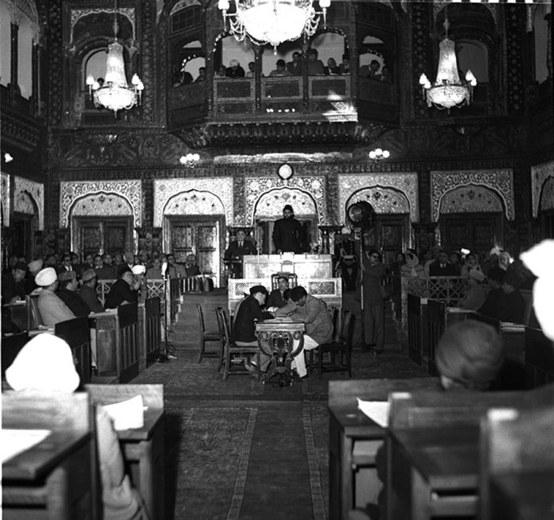

The Jammu & Kashmir Constituent Assembly: A Brief History
Very few Indians had the distinction of being constitution framers twice over. In fact, there were only four: Sheikh Abdullah, Moti Ram Baigra, Mirza Afzal Beg and Maulana Mohammad Masoodi. On 22 January 1950, they joined their fellow Assembly colleagues to sign the Constitution of India 1950. But unlike their fellow Constituent Assembly members, constitution-making wasn’t over just yet. They returned to their home state to become Constitution framers again – this time to draft the Constitution of Jammu and Kashmir.
The matter then reached the U.S. Supreme Court. The Court upheld the conviction, and conspicuously held that the freedom of speech under the U.S. Constitution was not absolute.
In March 1948, the ruler of Jammu and Kashmir (J&K), Maharaja Hari Singh, signalled to his people, India and the world that his State would soon have a ‘democratic constitution based on adult franchise…’. Less than a year earlier, in dramatic political circumstances, J&K had acceded to the Indian Union on terms in the Instruments of Instruction that allowed it to retain much of its autonomy.
On 17 October 1949, during the final stages of the Indian Constitution-making project, N. Gopalaswami Ayyangar introduced draft Article 306A (later renumbered as Article 370) in the Constituent Assembly. The purpose of this draft Article was to grant Kashmir a special status within India’s federal set-up. While presenting the Article, Ayyangar faced an interruption from Maulana Hasrat Mohani, the founder of the Communist Party of India, who pointedly questioned the reason for such discrimination.
In response, Ayyangar clarified that the special status was necessitated by the unique circumstances prevailing in Kashmir. Unlike other states, Kashmir was deemed unprepared for full integration with the soon-to-be Republic, primarily due to the ongoing war in the region and the involvement of the United Nations in the matter. Following the discussion, Draft Article 306A was adopted by the Constituent Assembly Assembly as Article 370.
Article 370 of the Constitution of India 1950 confirmed the unique constitutional status of J&K and recognised its right to frame a State Constitution. In late 1950, the interim J&K Prime Minister Sheikh Abdullah began writing to Jawaharlal Nehru and Alladi Krishnaswami Ayyar to set up a J&K Constituent Assembly.
These exchanges anticipate some of the key questions that the J&K Assembly had to settle, some of which were existential like the State’s relationship with India and the constitutional position of J&K’s monarch. These exchanges are quite reminiscent of those that occurred between the Cabinet Mission, Viceroy Lord Mountbatten and the Indian political leaders in the lead to the Indian Constituent Assembly.
“A language is something infinitely greater than grammar and philology. It is the poetic testament of the genius of a race and a culture, and the living embodiment of the thoughts and fancies that have moulded them”
On 27 October 1950, Sheikh Abdullah’s party, the Jammu and Kashmir National Conference passed a resolution asking the Government of India to convene a Constituent Assembly based on adult suffrage. In August-September 1951, elections based on adult franchise were held and the National Conference swept them – all 75 members were from the party.

These 75 members convened at the Constituent Assembly Chambers in Srinagar on 31 October 1951. In his opening speech, Sheikh Abdullah, to the relief of Indian political leaders, announced that Kashmir would join India but on its own terms. This was politically significant. Indeed, Kashmir had already joined the Union, but it was important for the Constituent Assembly to confirm it. Sheikh Abdullah addressed the elephant in the Assembly and made his preference clear.
The J&K Constituent Assembly largely adopted procedures similar to the Indian Constituent Assembly. Smaller groups of Assembly members were constituted into Committees tasked with producing draft articles on specific themes. Some of these included the Committees on Rules of Procedure, Advisory Committee on Fundamental Rights and Citizenship, and the Basic Principles Committee. The reports of these Committees containing draft articles were presented to the plenary Assembly for debate and amendments. The Assembly would then adopt or reject the Article through a vote.
The Assembly sat for 56 days over a 5-year period and adopted the Jammu and Kashmir Constitution on 17 November 1956. The Constitution, to the relief of Indian political leaders, declared that ‘The State of Jammu and Kashmir is and shall be an integral part of the Union of India’.